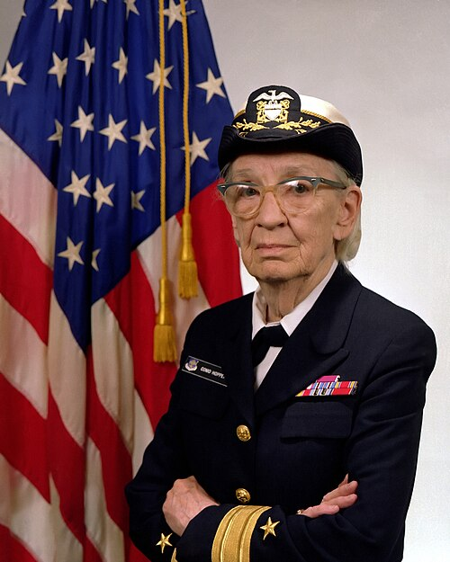

Descubra
Conheça as possibilidades profissionais dentro da tecnologia.
Informação, inspiração e caminhos para mulheres que querem conhecer, entrar, crescer e transformar o mercado de TI.
Embora as mulheres representem uma parcela significativa da população brasileira, elas ainda são minoria no setor de Tecnologia da Informação. Em 2025, elas correspondiam a 39,2% dos profissionais de TIC no Brasil, contra 60,8% de homens. Em áreas técnicas como programação e engenharia da computação essa diferença é maior, apenas 11,4% de participação feminina.
Além da menor representatividade, as mulheres receberam, em média, 27,5% menos que os homens no setor de TIC em 2025. Em cargos de diretoria e gerência no setor de TI, as mulheres representavam 35,2% dos profissionais, mostrando que a busca por igualdade ainda envolve tanto acesso quanto valorização profissional.
const carreira = {
curiosidade: true,
aprendizado: "contínuo",
futuro: "seu"
};A tecnologia precisa de diferentes experiências, perspectivas e ideias. Este espaço foi criado para facilitar o primeiro passo e apoiar a jornada de quem quer construir uma carreira em TI. Precisamos de mais mulheres para construir um futuro digital mais inclusivo e diverso. Projeto criado e desenvolvido para a disciplina de Atividade Extensionista II do curso de Análise e Desenvolvimento de Sistemas da Uninter.
Conheça as possibilidades profissionais dentro da tecnologia.
Encontre cursos, trilhas e recursos para desenvolver suas habilidades.
Faça parte de comunidades, eventos e redes de apoio.
Não existe uma única forma de trabalhar com tecnologia. Explore algumas das principais áreas.
Criação de sites, aplicativos, APIs e sistemas.
Transformação de dados em análises, modelos e decisões.
Experiências digitais úteis, acessíveis e centradas nas pessoas.
Infraestrutura, automação, entrega contínua e computação em nuvem.
Uma trilha simples para organizar seus primeiros passos em tecnologia.
Entenda algoritmos, variáveis, condições, loops e resolução de problemas.
Experimente desenvolvimento, dados, design, infraestrutura ou segurança.
Transforme o aprendizado em portfólio com projetos pequenos e reais.
Participe de comunidades, eventos, mentorias e processos seletivos.
Troque experiências, acompanhe tendências e amplie sua rede.
Comunidades podem oferecer troca de conhecimento, acolhimento, mentoria e oportunidades.
Conheça algumas referências que ajudam a contar a história da tecnologia.

Uma das figuras pioneiras da programação.

Pioneira na criação de linguagens e compiladores.
Matemática fundamental para a exploração espacial.
Referência em software para missões espaciais.
Estou fazendo migração de carreira para a tecnologia, sou interessada em desenvolvimento front-end. Já fiz um bootcamp de programação.
Atualmente estudo Análise e Desenvolvimento de Sistemas e já trabalhei em operações de TI por quase 3 anos!
Sou mãe de pet de um vira-lata caramelo estopinha ❤️
Adoro futebol, sou Palmeiras!
Estágiaria da Vivo Telefonica